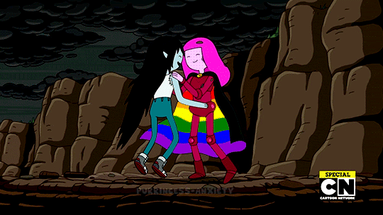
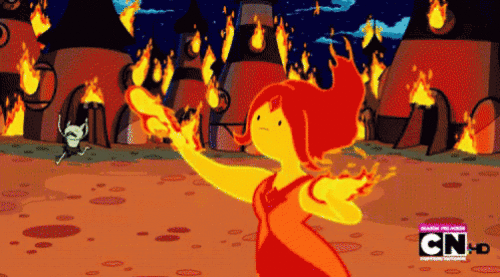

O altruísmo e o seu ímpeto heroico levaram a Rainha. Vampira a tentar salvar todos que estavam
presentes na festa. As labaredas de fogo ficam cada vez maiores e a cada segundo que passa os
convidados ficam mais desesperados. Marceline precisa tomar uma rápida decisão de como acabar com o
fogo. Qual será a solução mais rápida e eficaz?
1 - Usar sua guitarra para apagar o fogo?
ou
2 - Convencer o Rei Gelado a criar uma chuva que irá apagar as chamas?

Todos ficam felizes e Marceline ainda consegue seduzir Jujuba e conquista seu beijo
Marceline consegue convencer Rei Gelado de que uma chuva criada por ele poderia resolver o problema e ainda seria divertido tomar banho de chuva. Porém, nossa Rainha deve oriente precisamente qual a intensidade da chuva que Rei Gelado deve criar. Ajude-a a orientar nosso manda chuva (intensidade de 1 a 10❩
